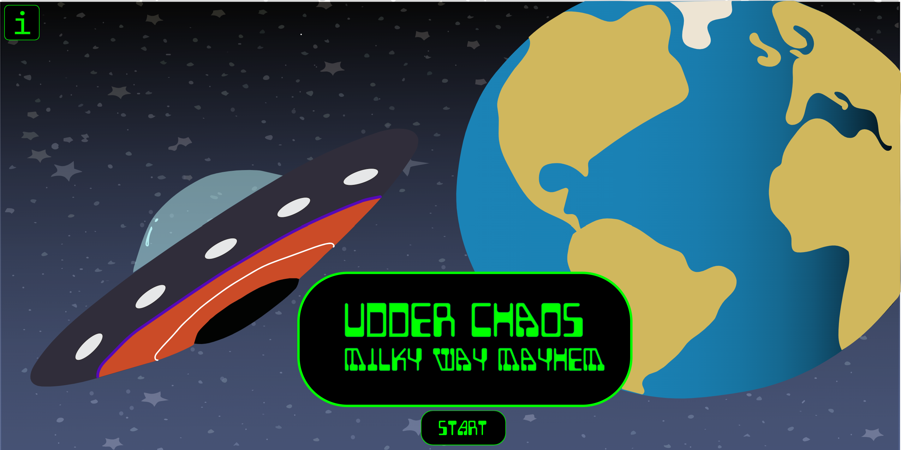
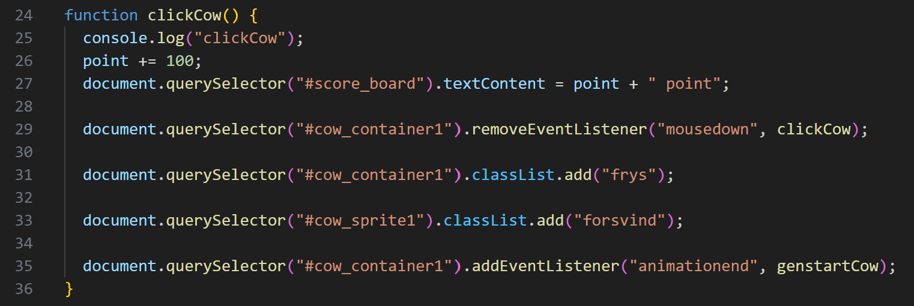

Udder Chaos
Dette tema præsenterede særlige udfordringer for mig, da jeg oprindeligt fejlfortolkede det nødvendige
værktøj til at skabe karakterer i Adobe Illustrator. Denne misforståelse medførte betydeligt tidsforbrug
og gjorde det næsten umuligt at udvikle et velfungerende spil. Det var min første erfaring med at forstå
og implementere JavaScript i mine projekter, og det viste sig at være langt mere udfordrende end jeg
havde forestillet mig.
At konceptualisere et spil, der både var visuelt tiltalende og engagerende at spille, var en interessant proces. Jeg endte med at revidere mit koncept en eller to gange, før jeg besluttede mig for "Udder Chaos: Milky Way Mayhem".
At konceptualisere et spil, der både var visuelt tiltalende og engagerende at spille, var en interessant proces. Jeg endte med at revidere mit koncept en eller to gange, før jeg besluttede mig for "Udder Chaos: Milky Way Mayhem".

